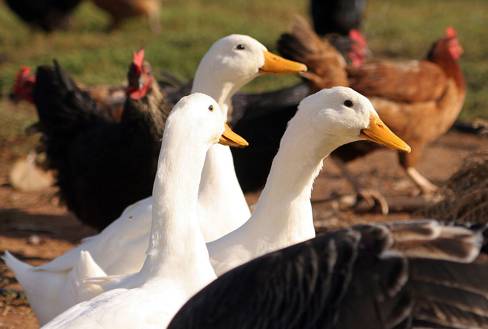

A háziasítás története
A házi kacsa a récefélék családjába tartozó baromfi, a tőkés réce (vadkacsa) alfaja, háziasított változata.
Táplálékát gabona és rovarok alkotják. Húsa, mája, zsírja, tepertője finom falat, de tojását – amelynek szárazanyag- és zsírtartalma lényegesen nagyobb a tyúktojásénál – csak alaposan megfőzve fogyasszuk, mert paratífusszal fertőzött lehet. Fosztott tollával párnát töltenek.
Költés ideje átlagosan 28 nap. A kacsa hímjét gácsérnak hívjuk, a tollazata színpompásabb a tojóénál. Háziasítása megközelítőleg 5000 évvel ezelőtt történt.
Házi kacsafajták összehasonlítása
| Fajta | Származás | Jellemző |
|---|---|---|
| Pekingi kacsa | Kína | Gyors növekedés, fehér tollazat |
| Szürke ukrán kacsa | Ukrajna | Jól tűri a fagyot, nem igényel speciális takarmányt |
| Khaki Campbell | Anglia | Nevét a katonai egyenruha színeiből kapta |
| Cayuga | USA | Csendes fajta, fekete tollazatú, zöld árnyalattal |
További információk a Gardenlux oldalán.